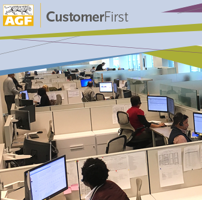
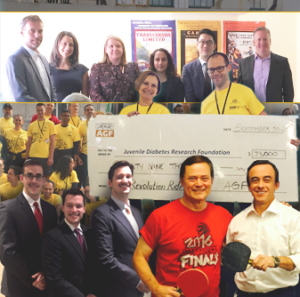

2010
Accueillir le changement
-
2014 Kevin McCreadie se joint à AGF

Fort de plus de 30 années d’expérience dans l’industrie, Kevin McCreadie rejoint AGF en juin 2014 en tant que président et chef des investissements.
À ce titre, il assure le leadership des équipes de gestion de l’investissement d’AGF et dirige le secteur institutionnel mondial de l’entreprise. -
2015 Judy Goldring parmi les 100 Canadiennes les plus influentes selon WXN
Judy Goldring, vice-présidente directrice et chef de l’exploitation, est intronisée au Temple de la renommée des 100 Canadiennes les plus influentes de 2015 par le Réseau des femmes exécutivesMC (WXN).
Cet honneur est décerné aux femmes qui accèdent pour la quatrième fois au Top 100 des Canadiennes les plus influentes. -
2015 Participation dans une société stratégiste en matière de FNB
En novembre 2015, AGF annonce avoir acquis une participation dans FFCM, société de conseils et de gestion spécialisée en matière de FNB et établie à Boston, dont le savoir-faire est mis en œuvre à travers une gamme de FNB non traditionnels et à bêta intelligent, de même qu’un certain nombre de solutions gérées FNB.
-
2016 AGF CustomerFirst
En février 2016, AGF investit considérablement dans le service à la clientèle et lance « AGF CustomerFirst », une initiative qui se manifeste sous forme de centres d’appel et de services de soutien à la clientèle.
Comme le nom l’indique en anglais, nous donnons priorité à nos clients et relevons d’un cran la qualité de leur expérience.
-
2017 L’avènement des FNB
Utilisant ses capacités en matière de gestion quantitative de l’investissement, AGF – sous la tutelle de sa nouvelle filiale AGF iQ – lance sept nouveaux FNB gérés activement.
Actions de base optimisées : Actions canadiennes / Actions américaines / Actions internationales / Actions des marchés émergents.
Multicatégorie, axés sur les résultats : Mondial d’actions Gestion tactique / Répartition multicatégorie / Répartition multicatégorie de revenu. -
2017 #MakingADifference, le mot-clic qui fait la différence
À AGF, notre mission visant à aider les investisseurs à réussir s’est toujours étendue à nos collectivités.
En 2017, pour notre 60e anniversaire, nous rendons hommage aux efforts que nos employés déploient pour prêter main-forte aux collectivités.
Visitez AGF.com/Facebook tous les lundis pour découvrir comment AGF s’implique dans les collectivités. #MakingADifference